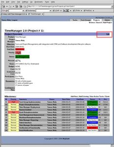

After adding a project, one can then edit the project to define milestones, view the Gantt chart, and more.
- Overview section
-
Edit Overview
See Also:
-
Adding a new milestone
See Also:
- Adding an existing milestone
- View Active Tasks
-
Gantt Chart
See Also:
- Canceling the Project
- Overview section:
- Edit Overview:
- Adding a new milestone:
- Adding an existing milestone:
- View Active Tasks:
- Gantt Chart:
- Canceling the Project:
By clicking on the 'Edit' link near the top, one can go to a screen to edit the details of the project.
To add a new milestone, click on the 'Add New' link next to the 'Milestones' header. This will open a new window for you to fill out. After saving and closing the window, the project window should refresh.
By clicking on 'Add Existing', one gets a search form to specify the criteria to find the desired milestones. After clicking on 'Link', and closing the window, one should see the updated project with the newly linked milestone.
By clicking on 'View Active Tasks', one is able to see and alter any tasks that yet to be finished fo the project to be complete.